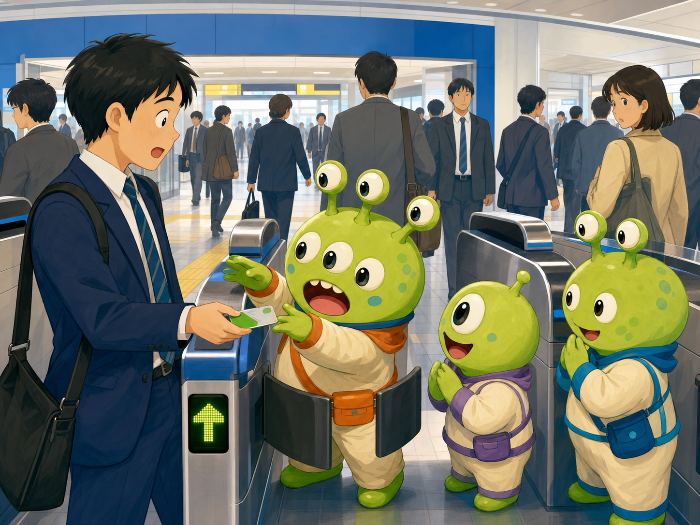

English
音声認識
Client-side AI Learning Lab
Chrome Prompt APIを使ったローカルAIデモ集
🔒 完全ローカル処理 | 🤖 Gemini Nano使用 | 🎯 学習者向けAI実験
⚙️ 初回セットアップ（1回のみ）
「AIモデルを準備する」をクリック
AIモデルのダウンロード
※ 初回利用時は数分かかる場合があります
📋 デモの切り替え
タブを選ぶ
音声翻訳または説明ゲームを試す
ローカルAIの反応を確認
リアルタイム英日音声翻訳
英語の音声を認識し、Chrome Prompt APIで日本語へストリーミング翻訳します。
日本語
AI翻訳
📝 翻訳履歴
ピンチ脱出ゲーム
1分で考え、1分で英語説明。3つの謎アイテムを使って危機を切り抜ける方法を伝えます。
Scenario Language
Phase
待機中
Timer
01:00
Mission
未開始

Situation
Start a new mission
A strange situation and your goal will appear here.
Goal
Explain your idea clearly enough for the listener to understand.
Communication Score
--
採点すると、意味伝達・理由の明確さ・アイテム活用・タスク達成・修復しやすさが表示されます。